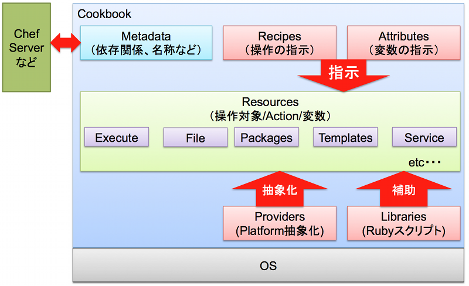
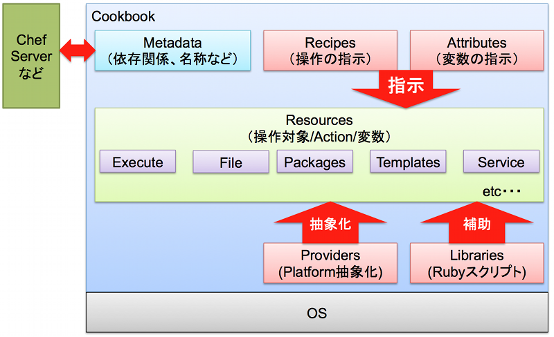

recipeの基本¶

- Recipeは、リソースを集めたもの
- Cookbooksは、recipes, templates, files, custom resources, etc
- Codeのモジュール化と再利用
« Chef Nodeを操作 :: コンテンツ :: recipeでmotdを操作してみる »

- Recipeは、リソースを集めたもの
- Cookbooksは、recipes, templates, files, custom resources, etc
- Codeのモジュール化と再利用
« Chef Nodeを操作 :: コンテンツ :: recipeでmotdを操作してみる »